Python, álgebra linear (matrizes, produto escalar) e cálculo (sim, precisamos de matemática :-)).
| Bloco | Teoria 1 | Teoria 2 | Teoria 3 | Lab |
|---|---|---|---|---|
| 1 · Fundamentos | A1 Neurônio → MLP | A2 Perda e backprop | A3 Otimização e regularização | A4 MLP em PyTorch |
| 2 · CNNs | A5 Convolução e pooling | A6 LeNet → ResNet | A7 Transfer learning | A8 Fine-tuning de CNN |
| 3 · Visão Aplicada | A9 Detecção (YOLO) | A10 Segmentação | A11 Avaliação e robustez | A12 Detecção/segmentação |
| 4 · Sequências | A13 Tokenização e embeddings | A14 RNN, LSTM, GRU | A15 Atenção | A16 LSTM vs. atenção |
| 5 · Transformers | A17 Arquitetura | A18 BERT, GPT, ViT | A19 Hugging Face | A20 Fine-tuning de BERT |
| 6 · Generativos/LLMs | A21 AE, VAE, GAN, difusão | A22 Como LLMs funcionam | A23 RAG, LoRA, ética | A24 Sistema RAG |
| Componente | Peso | Como funciona |
|---|---|---|
| P1 | ⅓ | Conteúdo inteiro da disciplina. |
| Projeto final | ⅓ | Individual ou em dupla, usando técnicas ensinadas em sala de aula. |
| Gamificação (XP) | ⅓ | XP acumulado em quests, desafios e labs. 80% do XP base já dá nota 10 |
Por que XP? Para recompensar quem pratica um pouco toda semana, e não só na véspera da prova. :-)
| Atividade | Qtd. | XP cada |
|---|---|---|
| Quest em sala | 18 | 50 |
| Desafio em casa | 18 | 70 |
| Lab (checkpoint + entrega) | 6 | 60 + 180 |
| Total base | 3600 |
30 XP pela participação + até 20 pelo desempenho, anotados pelo professor no fim da aula.
Formatos: Lightning Round, Place your Bets, Teach it Back, Architect, Diagnose the Curve, Rank it, Two Truths and a Lie.
Prazo de 7 dias. Envio pela página do desafio, com um link de comprovação (Colab, GitHub, PDF ou imagem).
Formatos: Study (ler e responder), Implement (código curto), Explore (testar uma ferramenta), Create (explicar um conceito).
Seu link pessoal: você recebe por e-mail o link da disciplina com sua matrícula (?aluno=...). Por ele você acompanha XP, nível e badges.
pip install torch torchvisionimport torch
print(torch.__version__)
print(torch.cuda.is_available())
# True no Colab com GPUTeste isso hoje, antes do Lab 1 (Aula 04).
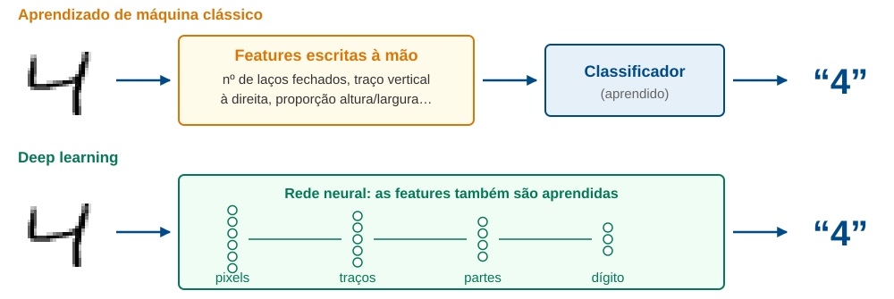
No aprendizado clássico, alguém decide o que medir na imagem e o modelo só aprende a combinar essas medidas. Em deep learning, a rede aprende também o que medir.
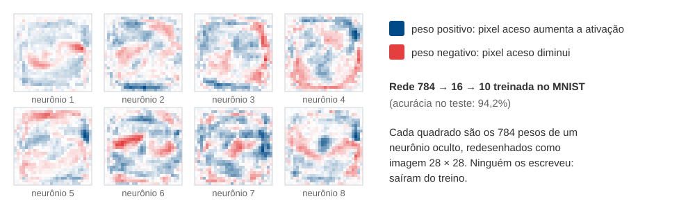
Cada neurônio virou um detector de padrões de traço. Em redes profundas de imagens, as camadas seguintes combinam esses detectores em partes e objetos (Zeiler & Fergus, 2014). Veremos isso nas CNNs, no Bloco 2.
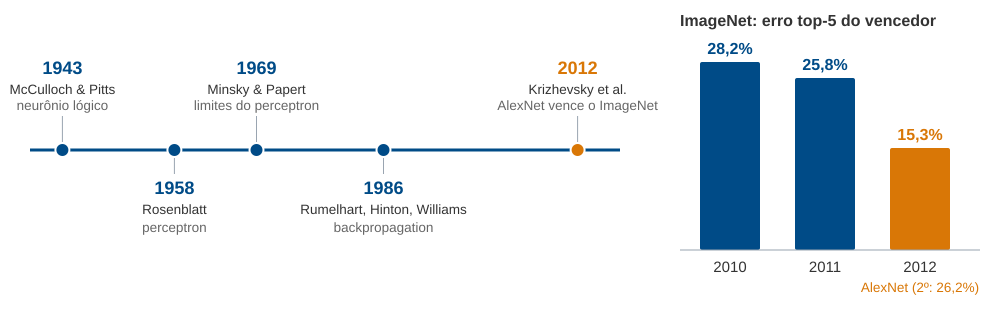
O ImageNet tem mais de 1 milhão de imagens rotuladas para treino. O MNIST, de 1998, tem 60 mil.
A AlexNet treinou em duas GPUs de jogos por cerca de uma semana.
Bibliotecas como o PyTorch calculam as derivadas sozinhas e levam a conta para a GPU.
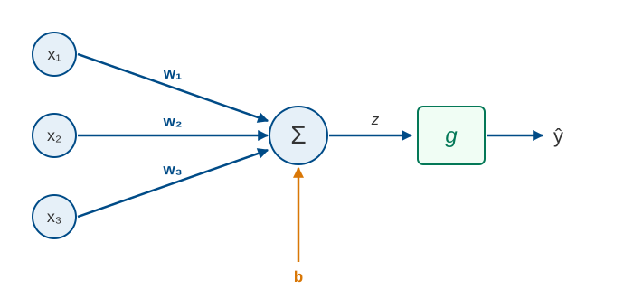
Hoje escolhemos os pesos à mão. Na Aula 02, a rede vai encontrá-los sozinha.
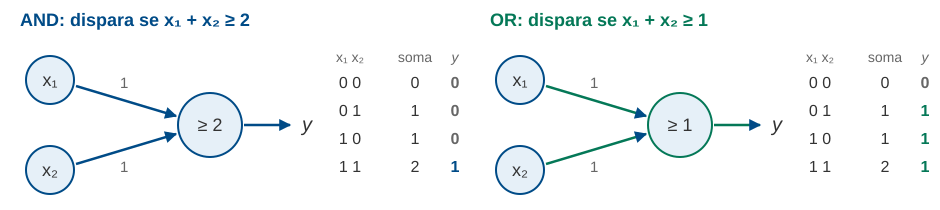
McCulloch e Pitts modelaram o neurônio como uma unidade que soma as entradas e dispara se a soma passa de um limiar. Com o limiar certo, o mesmo neurônio vira AND ou OR.
Neste modelo, os pesos e o limiar são escolhidos à mão. Nada é aprendido.
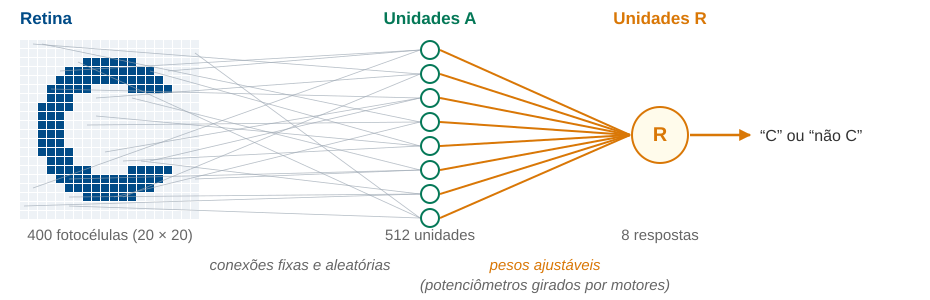
onde:
Em forma vetorial: $\ \hat{y} = g(\mathbf{w}^\top \mathbf{x} + b)$.
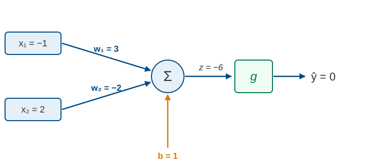
Pesos $\mathbf{w} = (3, -2)$, viés $b = 1$, entrada $\mathbf{x} = (-1, 2)$:
E para $\mathbf{x} = (1, 1)$? $z = 3 - 2 + 1 = 2 \Rightarrow \hat{y} = 1$
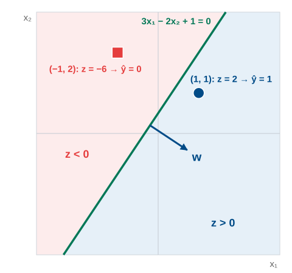
Os pontos com $z = 0$ formam uma reta:
Um neurônio desenha uma reta e diz de que lado o ponto está.
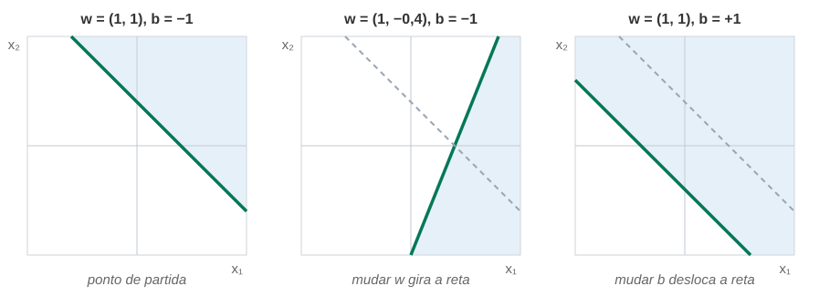
Aprender, para um neurônio, é escolher a posição da reta: $\mathbf{w}$ escolhe a inclinação e $b$ escolhe onde ela passa.
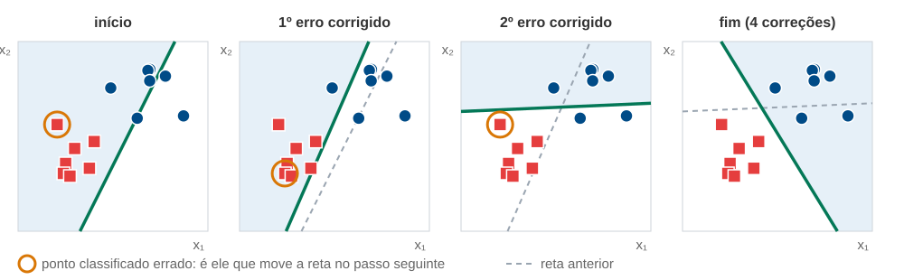
Para cada exemplo $(\mathbf{x}, y)$, com $y \in \{-1, +1\}$:
Se acertou, nada muda. $\eta$ é o tamanho do passo (aqui, 0,5).
Se existe uma reta que separa as classes, a regra para depois de um número finito de correções (Novikoff, 1962). Se não existe, ela nunca para.
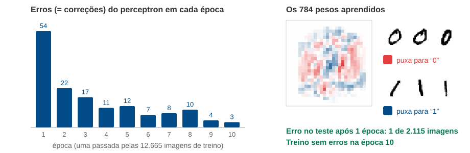
Cada imagem 28 × 28 vira um vetor de 784 entradas. Um único neurônio separa os dígitos 0 e 1 do MNIST: os pesos azuis ficam no traço vertical do "1", os vermelhos no anel do "0".
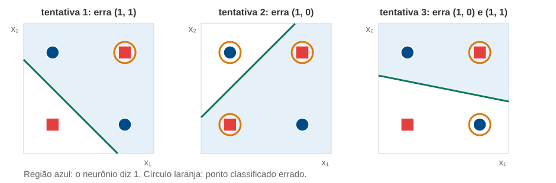
| $x_1$ | $x_2$ | XOR |
|---|---|---|
| 0 | 0 | 0 |
| 0 | 1 | 1 |
| 1 | 0 | 1 |
| 1 | 1 | 0 |
Os pontos da mesma classe estão em cantos opostos. Nenhuma reta deixa os dois azuis de um lado e os dois vermelhos do outro.
Minsky e Papert (1969) formalizaram esse tipo de limite do perceptron.
Criar uma feature nova: $x_3 = x_1 \cdot x_2$.
No espaço $(x_1, x_2, x_1 x_2)$, o ponto $(1, 1)$ sobe e um plano separa as classes:
Funciona porque sabíamos qual feature criar. Para pixels de uma imagem, ninguém sabe.
A camada oculta faz isso: aprende as features.
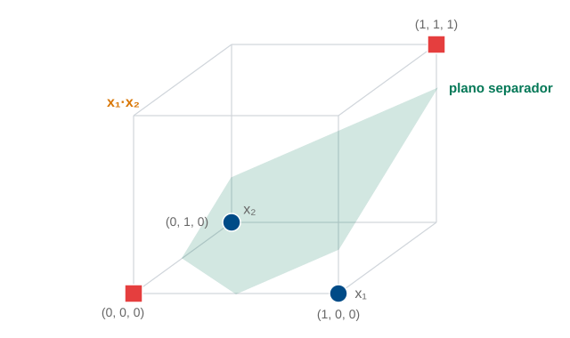
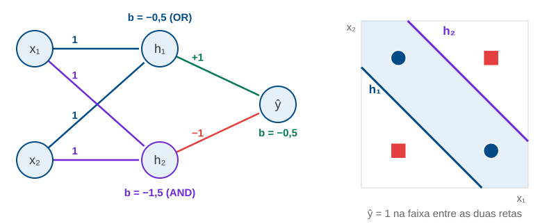
Cada neurônio oculto desenha uma reta. A saída combina as duas: diz 1 entre as retas, isto é, "OR e não AND".
A camada oculta muda as coordenadas dos pontos. No espaço novo, uma reta resolve.
● classe 1 ■ classe 0. À direita, (0,1) e (1,0) caem no mesmo ponto (1,0); a reta $h_1 - h_2 - 0{,}5 = 0$ separa as classes.
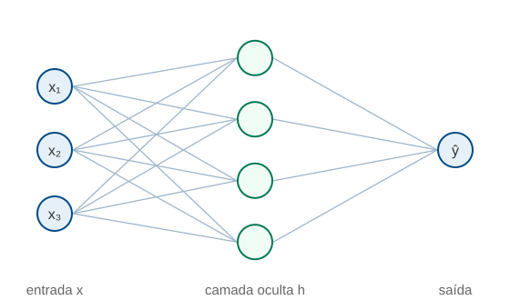
Com $H$ neurônios ocultos, fazemos as $H$ somas de uma vez:
onde:
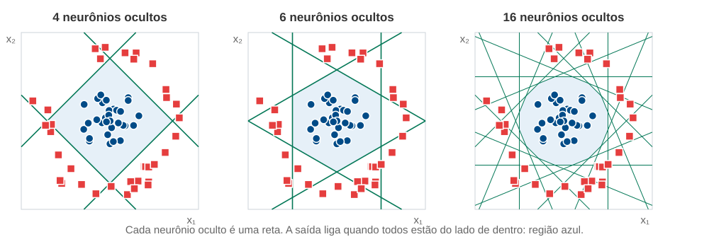
Cada neurônio oculto é uma reta. Se a saída liga quando todos estão do lado de dentro, a fronteira é um polígono. Com mais neurônios, o polígono se aproxima de um círculo.
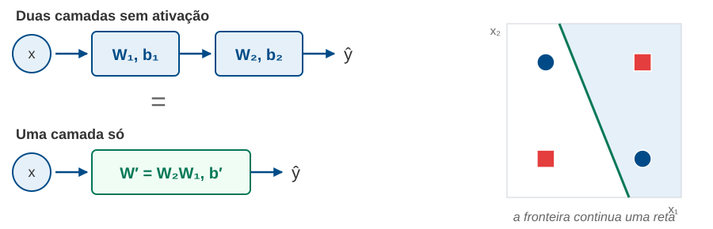
Duas camadas lineares são uma camada linear. Cem também. Sem a ativação, a fronteira continua sendo uma reta e o XOR continua impossível.
| Ativação | Forma | Fórmula | Onde aparece |
|---|---|---|---|
| Degrau | 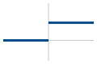 | $1$ se $z \ge 0$, senão $0$ | Perceptron original. Derivada zero: não serve para treinar com gradiente |
| Sigmoide | 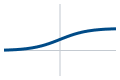 | $\sigma(z) = \dfrac{1}{1+e^{-z}}$ | Saída binária (probabilidade); portas da LSTM |
| Tanh | 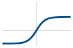 | $\tanh(z)$ | Centrada em 0; RNNs |
| ReLU | 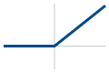 | $\max(0, z)$ | Padrão em MLPs e CNNs |
| GELU | 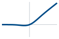 | $z\,\Phi(z)$ | Transformers (BERT, GPT-2) |
$\Phi$ é a função de distribuição acumulada da normal padrão. Por que a derivada importa fica para a Aula 02.
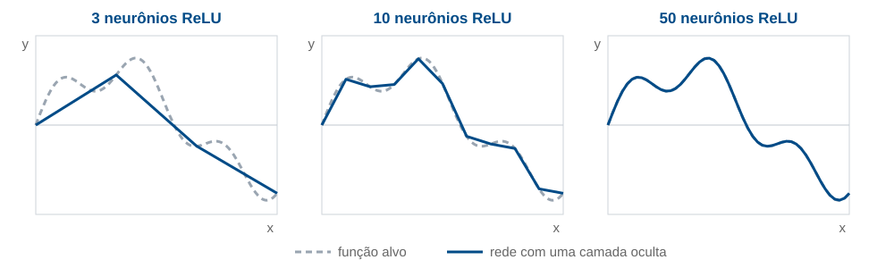
Um MLP com uma camada oculta e neurônios suficientes aproxima qualquer função contínua, num domínio limitado e fechado, com o erro que se quiser.
Cybenko (1989), Hornik (1991); Leshno et al. (1993) para qualquer ativação não polinomial, inclusive ReLU.
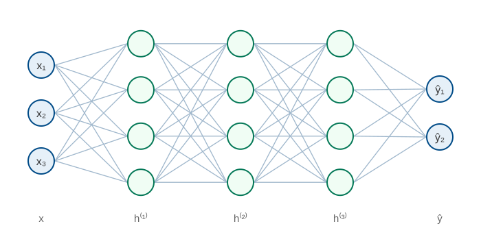
Cada camada combina as features da anterior. Para algumas famílias de funções, empilhar camadas sai exponencialmente mais barato que alargar uma única camada (Telgarsky, 2016).
Quantos parâmetros tem uma rede 784 → 128 → 64 → 10?
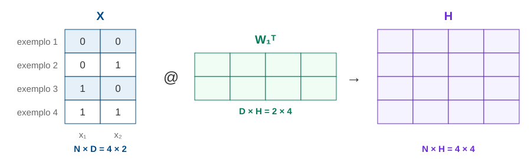
Um lote de $N$ exemplos vira uma matriz $\mathbf{X} \in \mathbb{R}^{N \times D}$, uma linha por exemplo. A camada oculta inteira é uma multiplicação: $\mathbf{H} = g(\mathbf{X}\mathbf{W}_1^\top + \mathbf{b}_1)$.
Três atributos causam a maioria dos erros: shape, dtype e device (CPU ou GPU).
X = torch.tensor([[0., 0.], [0., 1.],
[1., 0.], [1., 1.]])
print(X.shape, X.dtype, X.device)
# torch.Size([4, 2]) torch.float32 cpu
W1 = torch.randn(4, 2) # (H, D)
H = torch.relu(X @ W1.T) # (N, H)
print(H.shape) # torch.Size([4, 4])import torch.nn as nn
class MLP(nn.Module):
def __init__(self, d_in, d_hid, d_out):
super().__init__()
self.net = nn.Sequential(
nn.Linear(d_in, d_hid), # W1, b1
nn.ReLU(), # g
nn.Linear(d_hid, d_out), # W2, b2
)
def forward(self, x):
return self.net(x)
model = MLP(2, 8, 1)
print(sum(p.numel() for p in model.parameters()))
# 33Cada linha corresponde a uma parte da equação $\ \hat{\mathbf{y}} = \mathbf{W}_2\, g(\mathbf{W}_1\mathbf{x} + \mathbf{b}_1) + \mathbf{b}_2$.
De onde vem o 33?
Grupos de 3–4. Para cada configuração, apostem "resolve" ou "não resolve" (acurácia de 100% no XOR) com uma justificativa de uma linha. Depois rodamos ao vivo, com 20 seeds cada. Cada aposta certa e bem justificada pontua.
| # | Configuração (Adam, lr = 0,01, 5000 passos) | Resultado |
|---|---|---|
| 1 | Perceptron: só uma camada linear, sem camada oculta | Nunca: a fronteira é uma reta |
| 2 | MLP com 2 neurônios ocultos, sem ativação | Nunca: colapsa numa camada linear |
| 3 | MLP com 2 neurônios ocultos + ReLU | Às vezes: depende da inicialização (seeds) |
| 4 | MLP com 8 neurônios ocultos + ReLU | Quase sempre: sobra capacidade |
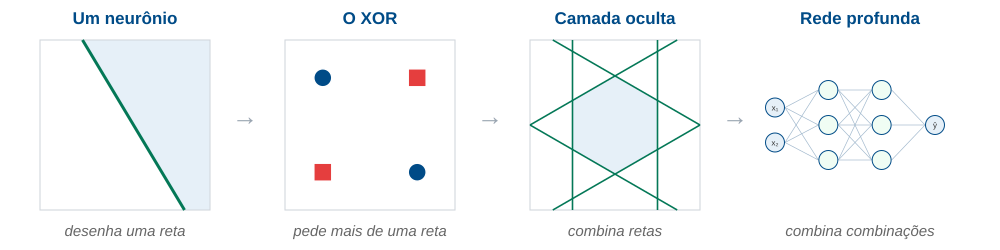
Hoje escolhemos os pesos à mão. Como a rede encontra os pesos sozinha? Funções de perda, gradiente descendente e backpropagation.
Acesse playground.tensorflow.org e escolha o dataset espiral:
Prazo: 7 dias · Envio: página do desafio